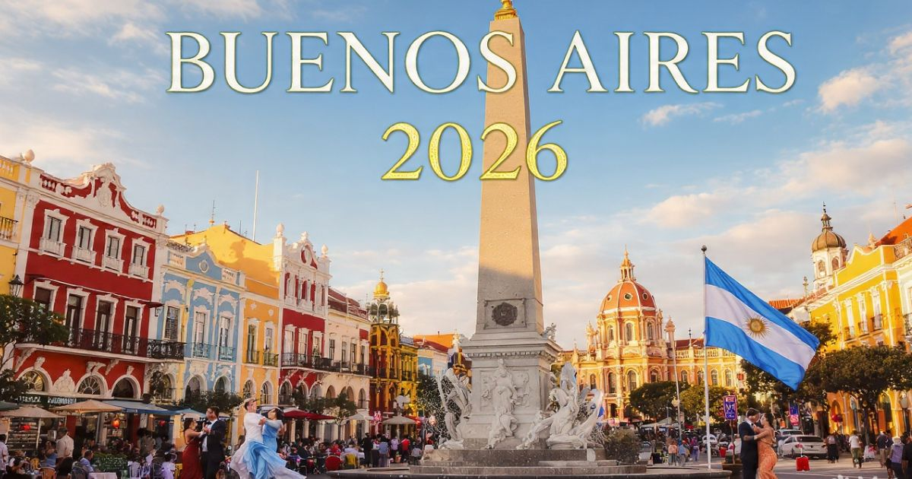

Buenos Aires 2026: guia completo para viajar para a capital da Argentina
Introdução: a Paris da América do Sul
Buenos Aires é, sem dúvida, uma das cidades mais fascinantes e encantadoras da América Latina. Capital da Argentina, a cidade combina elegância europeia, paixão latina e uma cultura vibrante que cativa visitantes de todos os cantos do mundo. Seja para explorar a arquitetura de inspiração parisiense, dançar tango, provar o famoso bife argentino, visitar a Casa Rosada ou simplesmente passear pelas charmosas ruas de Palermo, Buenos Aires oferece experiências inesquecíveis para todos os perfis de viajantes.
Em 2026, Buenos Aires continua sendo um dos destinos preferidos dos viajantes brasileiros. A cidade se prepara para receber turistas do mundo inteiro com uma infraestrutura cada vez mais moderna, mantendo seu charme histórico e sua essência única. Com sua combinação de cultura, gastronomia, arquitetura e vida noturna, a capital argentina é o destino perfeito para quem busca lazer, cultura e boa comida.
Neste guia completo sobre Buenos Aires, você vai encontrar tudo o que precisa saber para planejar sua viagem: a melhor época para visitar, as atrações imperdíveis, os melhores bairros para se hospedar, como se locomover pela cidade, dicas de gastronomia, compras e muito mais.
Nosso objetivo é que você chegue a Buenos Aires preparado para aproveitar ao máximo cada minuto nessa cidade encantadora. Afinal, Buenos Aires é mais do que um destino — é uma experiência que combina história, cultura, gastronomia e a calorosa hospitalidade argentina em um só lugar.

A Casa Rosada e o Obelisco, símbolos máximos de Buenos Aires
Melhor época para visitar Buenos Aires
Buenos Aires tem quatro estações bem definidas, cada uma com sua beleza única. A escolha da melhor época depende do que você busca na viagem.
Primavera (setembro a novembro) — Uma das melhores épocas para visitar Buenos Aires. As temperaturas são agradáveis (entre 15°C e 25°C), as flores desabrocham nos parques da cidade e os dias ficam mais longos. A cidade ganha vida após o inverno, com uma atmosfera vibrante e colorida. Os preços dos hotéis são moderados.
Verão (dezembro a março) — Época mais quente do ano, com temperaturas que podem ultrapassar 30°C. A cidade fica cheia de turistas, os preços são mais altos e as ruas ficam movimentadas. No entanto, o verão oferece uma programação intensa de eventos, festivais ao ar livre, noites quentes e a oportunidade de aproveitar a vida noturna. É a época mais animada da cidade.
Outono (abril a junho) — Muitos consideram o outono a melhor estação para visitar Buenos Aires. As temperaturas são agradáveis (entre 12°C e 22°C), as folhas das árvores se transformam em um espetáculo de cores douradas e alaranjadas, e a cidade oferece uma atmosfera charmosa e romântica. A alta temporada começa a diminuir após o verão, com preços mais acessíveis.
Inverno (julho a agosto) — O inverno em Buenos Aires é frio, com temperaturas entre 5°C e 15°C. A cidade se enche de luzes de Natal e decorações especiais. É uma época mais tranquila, com menos turistas e preços mais baixos. Para quem não gosta de frio, não é a melhor opção.
Dica: Se você busca um equilíbrio entre clima agradável e preços razoáveis, a primavera (setembro/novembro) e o outono (abril/junho) são as melhores escolhas. Evite os meses de dezembro e janeiro (alta temporada de verão) se quiser economizar.
O que fazer em Buenos Aires: atrações imperdíveis
Buenos Aires tem uma lista quase infinita de atrações. Separamos as imperdíveis para que você não perca nada:
Casa Rosada e Plaza de Mayo — A sede do governo argentino, com sua fachada rosa característica. A Plaza de Mayo é o coração político da cidade, cenário de importantes manifestações e eventos históricos. A visita ao interior da Casa Rosada é imperdível.
Obelisco — O monumento mais famoso de Buenos Aires, localizado no centro da cidade. O Obelisco é o símbolo máximo de Buenos Aires e um ponto de encontro para celebrações e manifestações.
Teatro Colón — Um dos teatros de ópera mais importantes do mundo, com uma arquitetura impressionante e uma acústica perfeita. A visita guiada ao teatro é uma experiência imperdível para os amantes da música e da cultura.
La Boca e Caminito — O bairro mais colorido e boêmio de Buenos Aires, com suas casas de zinco pintadas com cores vibrantes e a famosa rua Caminito. O bairro é o berço do tango e da cultura portenha.
Palermo e Jardim Japonês — O bairro mais charmoso de Buenos Aires, com ruas arborizadas, parques, lojas de design, restaurantes e cafés. O Jardim Japonês é um oásis de tranquilidade no meio da cidade.
Recoleta e Cemitério da Recoleta — O bairro mais elegante de Buenos Aires, com sua arquitetura refinada, lojas de grife e o famoso Cemitério da Recoleta, onde está o túmulo de Eva Perón (Evita).
San Telmo e Feira de Antiguidades — O bairro mais antigo de Buenos Aires, com ruas de paralelepípedos, lojas de antiguidades, bares tradicionais e a famosa Feira de San Telmo (aos domingos).
Puerto Madero — O bairro mais moderno de Buenos Aires, com arranha-céus, restaurantes sofisticados, vida noturna e a Puente de la Mujer (ponte da mulher). É o lugar ideal para um jantar ou um passeio noturno.
Show de Tango — Assistir a um show de tango é uma experiência obrigatória em Buenos Aires. Os melhores shows estão em La Boca, San Telmo e nos teatros especializados.
Onde ficar em Buenos Aires: melhores bairros
Escolher onde se hospedar é uma das decisões mais importantes da viagem. Cada bairro de Buenos Aires tem sua personalidade:
Palermo — O bairro mais charmoso e descolado de Buenos Aires, com ruas arborizadas, lojas de design, restaurantes, cafés e parques. Ficar em Palermo significa estar perto da vida cultural e da boa gastronomia. Os preços são variados.
Recoleta — O bairro mais elegante e sofisticado de Buenos Aires, com arquitetura refinada, lojas de grife e o famoso Cemitério da Recoleta. Ficar em Recoleta significa estar em uma das áreas mais nobres da cidade. Os preços são elevados.
San Telmo — O bairro mais antigo e boêmio de Buenos Aires, com ruas de paralelepípedos, lojas de antiguidades, bares tradicionais e a famosa Feira de San Telmo. Ficar em San Telmo significa estar imerso na história e na cultura portenha. Os preços são moderados.
La Boca — O bairro mais colorido e autêntico de Buenos Aires. Ficar em La Boca significa estar no berço do tango e da cultura argentina. Os preços são acessíveis.
Puerto Madero — O bairro mais moderno e sofisticado de Buenos Aires, com arranha-céus, restaurantes refinados e vida noturna. Ficar em Puerto Madero significa estar perto do luxo. Os preços são elevados.
Dica: Para quem visita Buenos Aires pela primeira vez, Palermo e Recoleta são as melhores opções pela localização e charme. Para quem busca economia e autenticidade, San Telmo e La Boca são ótimas escolhas.
Como chegar a Buenos Aires
Chegar a Buenos Aires é fácil, com voos diretos do Brasil e conexões eficientes.
Avião — Aeroportos:
- Aeroporto Internacional de Ezeiza (EZE) — O principal aeroporto internacional de Buenos Aires. Recebe voos diretos do Brasil com companhias como LATAM, Aerolíneas Argentinas e GOL. Fica a cerca de 30 km do centro e tem conexões de ônibus e transfer.
- Aeroporto de Aeroparque (AEP) — O aeroporto mais próximo do centro, utilizado para voos domésticos e para países vizinhos. Fica a cerca de 5 km do centro.
Como ir do aeroporto ao centro:
- Ezeiza: Ônibus (Tienda León) para o centro (ARS$ 5.000-8.000, 40-60 min). Táxi/Uber: ARS$ 15.000-20.000.
- Aeroparque: Táxi/Uber: ARS$ 4.000-6.000.
Visto e documentação: Brasileiros não precisam de visto para entrada na Argentina para turismo (até 90 dias). Apenas RG ou passaporte são necessários.
Transporte em Buenos Aires: como se locomover
Buenos Aires tem uma boa rede de transporte público, e a cidade também é muito agradável para explorar a pé.
Metrô (Subte):
- 6 linhas cobrem as principais áreas da cidade.
- Funciona das 5h30 à 23h30.
- Tarifa: ARS$ 500-700 por viagem (bilhete simples).
- Use o cartão SUBE (cartão recarregável) para pagar.
Ônibus:
- Ampla rede de ônibus cobre toda a cidade.
- Tarifa: ARS$ 300-500 por viagem.
Trens (Ferrovias):
- Conectam Buenos Aires aos subúrbios.
- Tarifa: ARS$ 200-400.
Táxis e aplicativos:
- Tarifa inicial: ARS$ 1.000 + ARS$ 200 por km.
- Uber e Cabify disponíveis.
Dica: O metrô (Subte) é a forma mais rápida e eficiente de se locomover em Buenos Aires. O cartão SUBE é aceito em todos os transportes e oferece integração entre metrô, ônibus e trens.
Gastronomia em Buenos Aires: o que comer
Buenos Aires é o paraíso da gastronomia argentina, com influências europeias e locais. Confira o que não perder:
Bife de chorizo (ou ancho) — O bife argentino é famoso em todo o mundo. Experimente o bife de chorizo ou ancho em uma das parrillas (churrascarias) tradicionais.
Empanadas — As empanadas argentinas são uma delícia. Experimente as de carne, frango ou queijo. São uma ótima opção de lanche.
Pizza argentina — A pizza argentina é diferente da italiana, com massa fofa e muito queijo. Experimente a pizza de "fugazza" ou "muzzarella".
Alfajores — O doce mais famoso da Argentina, feito com biscoitos recheados com doce de leite e cobertos com chocolate. Os melhores são da Havanna.
Dulce de Leche — O doce de leite argentino é o melhor do mundo. Experimente em sobremesas, sorvetes e doces.
Vinho Malbec — O vinho argentino é famoso em todo o mundo, especialmente o Malbec. Experimente um bom Malbec para acompanhar o bife.
Mercados gastronômicos:
- Mercado de San Telmo: Mercado histórico com restaurantes e comidas típicas.
- Feria de Palermo: Feira gastronômica com opções variadas.
Compras em Buenos Aires: o que levar para casa
Buenos Aires é um paraíso para as compras, com opções para todos os gostos.
Palermo Soho: Bairro com lojas de design, moda independente e artesanato.
Recoleta: Lojas de grife e luxo.
Feira de San Telmo: Antiguidades, artesanato e roupas vintage.
Souvenirs:
- Miniaturas da Casa Rosada e do Obelisco
- Chaveiros e imãs com símbolos de Buenos Aires
- Produtos gastronômicos (dulce de leche, alfajores, vinhos)
- Roupas de couro e artesanato
- Camisetas com estampas de Buenos Aires
Dicas de economia em Buenos Aires
- Use o cartão SUBE — O cartão recarregável para transporte público oferece tarifas mais baixas.
- Alimente-se em mercados e parrillas — Em vez de restaurantes caros, experimente as parrillas e os mercados.
- Visite museus em dias gratuitos — Muitos museus têm entrada gratuita em determinados dias.
- Fique em bairros econômicos — Bairros como San Telmo e La Boca têm hotéis mais baratos que Palermo e Recoleta.
Buenos Aires é uma cidade que combina cultura, gastronomia, arquitetura e paixão de forma única! Não deixe de provar o bife argentino, assistir a um show de tango e explorar a Feira de San Telmo. Use o cartão SUBE para economizar no transporte e prepare-se para se apaixonar pela capital argentina!
❓ Perguntas Frequentes sobre Buenos Aires
Recomenda-se pelo menos 5 a 7 dias para explorar Buenos Aires com calma. Com 5 dias, você consegue visitar as principais atrações e bairros. Com 7 dias, pode incluir uma excursão a Tigre (Delta do Paraná) ou a Colônia del Sacramento (Uruguai).
A primavera (setembro/novembro) e o outono (abril/junho) são as melhores épocas, com temperaturas agradáveis. O verão é quente e lotado. O inverno é frio, mas mais tranquilo.
Não. Brasileiros não precisam de visto para turismo na Argentina (até 90 dias). Apenas RG ou passaporte são necessários.
Uma viagem de 7 dias para Buenos Aires custa entre R$ 3.000 e R$ 8.000 (incluindo passagens, hospedagem, alimentação e atrações).
Dia 1: Casa Rosada, Obelisco, Teatro Colón, Recoleta; Dia 2: La Boca, Caminito, San Telmo, Feira de San Telmo; Dia 3: Palermo, Jardim Japonês, Puerto Madero.
Sim. Buenos Aires é uma cidade segura para turistas. Cuidado apenas com furtos em locais turísticos e no transporte público.
Palermo e Recoleta são as melhores opções para turistas, com boa localização, infraestrutura e segurança. San Telmo e La Boca são ótimas escolhas para quem busca autenticidade.
No verão: roupas leves e um casaco para a noite. No inverno: casaco pesado, cachecol e luvas. Calçados confortáveis para caminhar. Adaptador de tomada (tipo C ou I).